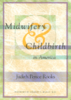

The definitive account of the many forces that intersect over the issue of childbirth
The definitive account of the many forces that intersect over the issue of childbirth


 The definitive account of the many forces that intersect over the issue of childbirth
The definitive account of the many forces that intersect over the issue of childbirth

|  |
Midwifery and Childbirth in AmericaJudith Pence Rooks, foreword by Charles S. Mahan, M.D.paper EAN: 978-1-56639-711-7 (ISBN: 1-56639-711-1) |
"...clear, articulate, and well-researched work.... [It] is a treasure trove of information and resources to everyone who works in the maternity services, to policy-makers, and to women. No library or bookshelf should be without it. This scholarly treatise is the most exhaustive, balanced, and comprehensive book on midwifery that has been written, and it will serve as an impetus and inspiration to a broad audience."
—Birth
Having a baby is an elemental human experience—profound, even sacred to some women and their families. At the same time, it is a significant component of health care. The medical model of childbirth emphasizes the pathological potential of pregnancy and birth, while an alternative model championed by midwives focuses on the normalcy of pregnancy and its potential for health. Now available in paperback, this definitive account of the many forces that intersect over the issue of childbirth explains in a comprehensive and authoritative manner the conceptual and philosophical differences between these models. The author has brought together in a clear and readable fashion the myriad strands of history, culture, science, economics, and policy that have resulted in the current condition of maternity care in the United States. She describes the disparate backgrounds, training, and roles of certified nurse-midwives and lay or direct entry midwives, and explains the contributions of both groups. Rooks believes that maternity care and childbirth in America can, and should, be better than it is today, and offers steps to take in the direction.
Excerpt available at www.temple.edu/tempress
"We have been waiting a long time for this book: a comprehensive, readable, and authoritative discussion of the important role of midwifery in the United States. It will spark a passionate—and long overdue—dialogue about the way pregnant women are taken care of in this country."
—Roger A. Rosenblatt, MD, MPH, Professor and Vice Chair of the Department of Family Medicine, University of Washington, Seattle
"Rooks has written a comprehensive, balanced and eminently readable book."
—The Journal of the Association for Research on Mothering
List of Tables
Foreword – Charles S. Mahan, M.D.
Preface
Acknowledgments
1. What Is Midwifery?
2. Brief History of Midwifery in the West
3. The Beginning of Nurse-Midwifery
4. Midwifery Amid the Social Movements of the 1960s and 1970s
5. Maternal and Infant Health and the Health Care System, 1980-1995
6. Midwifery in America: Philosophy, Objectives, and Body of Knowledge
7. Midwifery in America, 1980-1994: Percent of Births, Place of Birth, and Clientele
8. Nurse-Midwifery in America, 1980-1995
9. Development of Direct-Entry Midwifery, 1980-1995
10. The Quality, Safety, and Effectiveness of Midwifery as Practiced in the United States
11. Safety of Out-of-Hospital Births in the United States
12. Effects of Midwifery Care on Costs and Other Special Contributions
13. Midwifery in Europe, Canada, Australia, New Zealand, and Japan
14. The Current Situation and Recommendations for the Future
References
Index
 | Judith Rooks is a nurse-midwife and epidemiologist with a long career in public health. She has taught in a school of nursing, a school of medicine, and a school of midwifery. The author of more than 50 scientific and professional papers, she is also past-president of the American College of Nurse-Midwives. She is an Associate of the Pacific Institute for Women's Health in Los Angeles. |
Health and Health Policy
Women's Studies
Education
© 2015 Temple University. All Rights Reserved. This page: http://www.temple.edu/tempress/titles/1369_reg.html.